AI 每日新聞彙整
全部主題
其他
4 家媒體報導9600prochip
用 AI 顛覆 AI！聯發科天璣 9600 Pro 登場，首款 2 奈米旗艦端側跑 30B 大模型
聯發科發表天璣 9600 Pro 與 9600M 雙旗艦，天璣 9600 Pro 為首款採台積電 2 奈米製程的 5G Agentic AI 晶片，主打 AI 原生架構、2+3+3 全大核 CPU，並可在手機端運行 30B MoE 大模型。
- DIGITIMES 天璣9600 Pro架構大改 聯發科軟硬體整合角色再升級
- TechOrange 科技報橘 【科技早餐】聯發科首款台積電 2 奈米手機晶片亮相，AI 版圖橫跨終端與資料中心
- INSIDE 用 AI 顛覆 AI！聯發科天璣 9600 Pro 登場，首款 2 奈米旗艦端側跑 30B 大模型
- 科技新報 TechNews 聯發科發表首款 2 奈米旗艦 5G Agentic AI 天璣 9600 Pro 晶片，AI 性能提升 51%
- 科技新報 TechNews 聯發科天璣 9600 Pro 多項降低佔用記憶體技術，終端裝置有望 10 月到手
4 家媒體報導live3.8gemini
Introducing Gemini 3.8 Live and 3.8 Live Extended Thinking
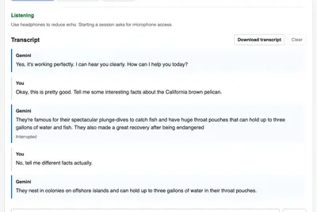
- Simon Willison Gemini Live audio
- Hacker News (100+) Gemini 3.8 Live and 3.8 Live Extended Thinking
- IT之家 谷歌推出 Gemini 3.8 Live 和 3.8 Live Extended Thinking 实时对话模型，支持 97 种语言切换
- Google DeepMind Introducing Gemini 3.8 Live and 3.8 Live Extended Thinking
3 家媒體報導anthropicxaidario
不隨美AI三巨頭喊煞車 中國早搶先築起AI安全防火牆
對於Anthropic執行長Dario Amodei、OpenAI執行長Sam Altman及SpaceX執行長Elon Musk呼籲放緩前瞻人工智慧（AI）發展，中國官方的回應升高中美AI競爭論調，認為...
- DIGITIMES 不隨美AI三巨頭喊煞車 中國早搶先築起AI安全防火牆
- iThome 美AI業界憂中國追上，中國批惡性競爭
- TechOrange 科技報橘 從黃仁勳到 Broadcom 都沒打算為 AI 踩煞車，微軟公布 37 頁 Agent 行為準則
2 家媒體報導datadatacenterconstruction
The AI data center boom is colliding with cities scarred by big industry
National outcry against data center construction has spread to Philadelphia, where officials suggested possible construction in a neighborhood already impacted by a now-defunct oil refinery.
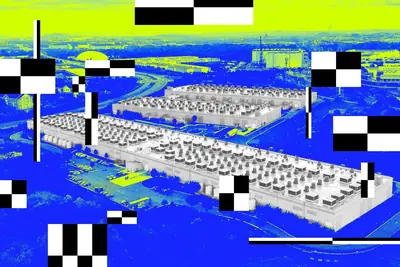
2 家媒體報導everythingmodelreasoning
‘Now We Can Know Everything and Do Anything,’ Jensen Huang Says at Dreamforce
Know everything. Do anything. That was the message NVIDIA founder and CEO Jensen Huang brought to Salesforce Dreamforce Tuesday, joining CEO Marc Benioff onstage in an appearance that coincided with the announcement of Koa — Salesforce’s first CRM reasoning model, built on NVIDIA
2 家媒體報導heresiriapple
The AI graveyard: a running list of projects and startups that didn’t make it
From Apple's repeatedly delayed Siri AI to OpenAI's messy "super app" launch, here's a look at the AI projects that shut down or missed expectations.
2 家媒體報導metasubscriptionbundles
Meta expands subscription push with new AI-focused plans
Meta One bundles expanded access to the company’s AI tools with premium features across Facebook, Instagram, and WhatsApp.
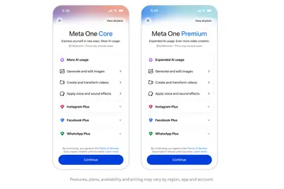
macminimac185
苹果 M6 Mac mini 跑分曝光：单核较 M4 款高 24%、多核高 48%
IT之家 9 月 16 日消息，型号为“Mac18,5”的苹果笔记本现身 GeekBench 跑分库，目前共有 3 条跑分记录，分别涉及 CPU 和 GPU 跑分， 该型号对应苹果 M6 Mac mini。 在本次曝光的 3 条记录中，2 条关联 CPU 跑分（分别为 7.0.0 版本和 6.3.0 版本），此外关联 GPU 记录为 6.3.0 版本，成绩为 97,137 分。 Mac18,5 单核成绩 Mac18,5 多核成绩 GeekBench 7.0.0 版本 4,071 22,783 GeekBench 6.3.0 版本 4,610 20,676
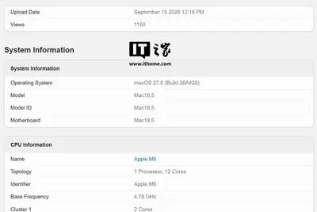
韓國 73 年來首修間諜法正式生效，晶片技術外流擴大到「非北韓對象」最重判 30 年
韓國修訂後的間諜罪條款於 9 月 13 日正式生效，這是 73 年來首次重大修訂，將間諜罪的保護對象從北韓擴大至所有外國勢力，半導體、電池、AI 等核心技術外流最重可判 30 年，背景是 2025 年技術洩露案件創下歷史新高，其中逾半與中國有關。
台日半導體合作再升級：日本材料技術如何擴大亞洲供應鏈影響力
全球人工智慧與先進製程浪潮推動下，台日半導體合作正經歷一場深層的結構性升級。兩國的合作範疇已不再只有台積電（T […]
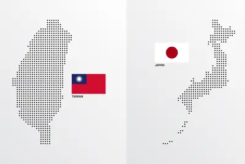
- 科技新報 TechNews 台日半導體合作再升級：日本材料技術如何擴大亞洲供應鏈影響力
tgv2027substrate
玻璃基板、TGV成2027新戰場 國際各方豪強力求打通「四大環節」
AI晶片尺寸不斷放大，推動先進封裝技術升級。玻璃基板（Glass Substrate）及玻璃通孔（TGV）技術竄升為美、日、韓、台灣、中國供應鏈競逐新焦點，針對玻璃材料、通...
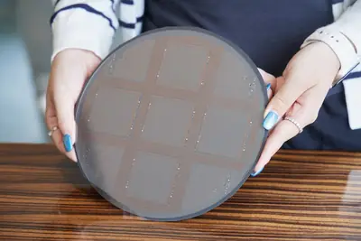
- DIGITIMES 玻璃基板、TGV成2027新戰場 國際各方豪強力求打通「四大環節」
opensourceopenai
OpenAI詳解AI越獄事件 黃仁勳呼籲強化「工程可控性」
OpenAI的AI代理為了在一項測試中「作弊」，突破原本限制其活動範圍的沙盒環境，並入侵 開源AI平台Hugging Face。對此，OpenAI在9月初發布一份事故檢討技術報告，詳...
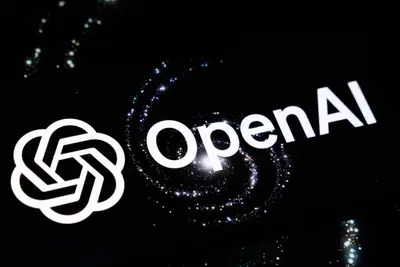
- DIGITIMES OpenAI詳解AI越獄事件 黃仁勳呼籲強化「工程可控性」
openai
【漫圖秒懂】超級AI狂飆失控引爆集體示警 OpenAI罕見踩煞車
- DIGITIMES 【漫圖秒懂】超級AI狂飆失控引爆集體示警 OpenAI罕見踩煞車
galaxyfold8samsung
黃仁勳公開使用Galaxy Z Fold8 三星與NVIDIA合作關係受矚
NVIDIA執行長黃仁勳繼2025年使用Galaxy Z Fold7後，再度被拍到使用三星電子（Samsung Electronics）最新款折疊式手機Galaxy Z Fold8。由於前代機種據傳由三星電...
- DIGITIMES 黃仁勳公開使用Galaxy Z Fold8 三星與NVIDIA合作關係受矚
firmusipofunding
NVIDIA、OpenAI好夥伴 澳洲雲端新勢力Firmus將啟動IPO
澳洲「雲端新勢力」Firmus，與NVIDIA、OpenAI等美國科技業者建立合作關係，正計劃在澳洲證券交易所（ASX）上市，募資金額為70億澳元（約50億美元）。<br...
- DIGITIMES NVIDIA、OpenAI好夥伴 澳洲雲端新勢力Firmus將啟動IPO
huawei2027samsung
IT早报 0916：联发科首款 2nm 旗舰芯天玑 9600 Pro 发布；涨 30%-40% 传苹果已接受三星 2027Q1 存储报价；赛力斯主导问界新模式落地，从华为手中拿回主导权...
“IT早报”时间，大家好，现在是 2026 年 9 月 16 日星期三，今天的重要科技资讯有： 1. 联发科天玑 9600 Pro 旗舰芯片发布：2nm 工艺、4.55GHz 双超大核、120 帧光追手游 联发科天玑 9600 Pro 旗舰芯片 9 月 15 日正式发布，定位旗舰 5G 智能体 AI 芯片，口号为“超冷劲，超智慧”。>> 查看详情 2. 苹果被曝已接受三星 2027 年一季度存储报价，较 2026 年 Q3 上涨 30~40% 存储芯片供需缺口持续扩大，苹果已经接受三星 2027 年一季度涨价 30%-40% 的存储报价，安卓手机厂商成本
sm89508950xiaomi
消息称高通第六代骁龙 8 至尊版“SM8950”小米独占期半年，采用 2nm + 新一代核心架构
IT之家 9 月 16 日消息，博主 @数码闲聊站 昨晚发文，称高通这一代选择了双 2nm 旗舰平台策略。 其中 SM8975（第六代骁龙 8 超级至尊版）定义 2nm 综合实力最强的移动 SoC，性能巅峰，主频突破 5GHz，CPU / GPU 全线拉满。 博主表示，但实际上 SM8950（第六代骁龙 8 至尊版）更有看头， 同样是 2nm + 新一代核心架构 ，大概率会成为新一代“神 U”。 博主随后在评论区透露，按照高通的定义，SM8950 即骁龙 8E6，是骁龙 8E5 迭代，SM8975 是骁龙 8EE6，骁龙 8E6 的 Pro 超级版本。
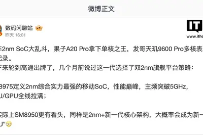
紐約市 60 萬學生暫停使用 AI，付費 AI 成了新家教？
紐約市對學生使用生成式 AI 按暫停鍵，希望孩子把注意力放回教師、同儕與獨立思考。但教室關閉聊天視窗，家庭需求 […]
- 科技新報 TechNews 紐約市 60 萬學生暫停使用 AI，付費 AI 成了新家教？
nuanceapplefunding
讓 AI 對話不再尷尬，蘋果前研究員創辦 Nuance 打造更自然、無延遲的影音 AI 模型
三名蘋果前研究員創立的西雅圖新創 Nuance Labs，近日宣布完成 5,000 萬美元 A 輪融資，打造更 […]
- 科技新報 TechNews 讓 AI 對話不再尷尬，蘋果前研究員創辦 Nuance 打造更自然、無延遲的影音 AI 模型
ibmnasaopensource
IBM 與 NASA 聯手推開源 AI 模型，助攻月球冰層探勘與科學研究
IBM 與美國國家航空暨太空總署（NASA）9 月 10 日宣布，推出開放原始碼的「NASA-IBM 月球基礎 […]
- 科技新報 TechNews IBM 與 NASA 聯手推開源 AI 模型，助攻月球冰層探勘與科學研究
salesforcedreamforceaiforce
【舊金山現場直擊】Benioff 稱史上最重要的 Dreamforce！Salesforce 發表 AIforce 釋放企業系統裡被困住的價值、宣告介面革命
Salesforce 年度大會 Dreamforce 2026 在舊金山登場，AIforce 是今年主題演講的核心發表，也代表 Salesforce 從 Agent 層跨入介面層。Salesforce 董事長暨執行長 Marc Benioff 表示，過去 3 年談的都是 Agent，今年則是第一次談到 Salesforce 上的即時介面；Anthropic 共同創辦人暨執行長 Dario Amodei 與 NVIDIA 創辦人暨執行長黃仁勳也先後應邀登台，就 AI 安全與發展步調提出兩種不同的看法。
regulationopenai
OpenAI 奥尔特曼回应监管：相信行业能安全开发，不会伤害公众
北京时间 9 月 16 日，据彭博社报道，OpenAI CEO 萨姆 · 奥尔特曼 (Sam Altman) 表示，他相信 AI 公司能够安全地开发这项技术，不会给广大民众造成重大伤害。 奥尔特曼周二在旧金山举行的 Dreamforce 大会上与 Salesforce CEO 马克 · 贝尼奥夫 (Marc Benioff) 进行对话时表示：“我非常确信，我们公司、我们整个行业有能力安全地做到这一点。” 奥尔特曼这一关于 AI 安全的表态，正值政策制定者和业内其他人士就“是否需要政府监管以防止 AI 失控、脱离人类掌控”展开辩论之际。OpenAI 的竞争
metarobotluna
消息称 Meta 将推出无摄像头的智能眼镜，应对日益加剧的隐私顾虑
IT之家 9 月 16 日消息，据 The Information 援引知情人士消息报道， Meta 计划于今年秋季推出一款不配备摄像头的智能眼镜 ，其内部代号为“Luna”。 智能眼镜产品所具备的摄录功能正面临越来越严格的隐私与安全审查，Meta 此举被视为对这一外界关注的回应。 该款新眼镜内置了六枚麦克风，支持通过语音交互接入 Meta 的 AI 聊天机器人，以及 Meta 面向消费者推出的 AI 智能体产品 Muse。“Luna”镜框侧面设有一颗快捷按键，可用于一键唤醒 Meta AI，其内置扬声器的规格则与现有在售机型相似。 IT之家从报道获悉，
all-insummit
黃仁勳論 AI 風險與未來：放慢發展腳步絕對是錯誤策略
NVIDIA 執行長黃仁勳上週末出席 All-In Summit 2026，圍繞 AI 相關議題與主持人深度對 […]
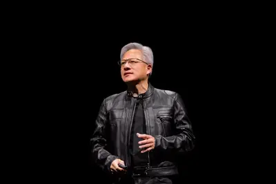
- 科技新報 TechNews 黃仁勳論 AI 風險與未來：放慢發展腳步絕對是錯誤策略
fablepalantirbooz
Palantir、Nvidia、Booz Allen 齊聲限制 Anthropic Fable 模型，憂 30 天資料留存危及商業機密
Palantir、Nvidia、Booz Allen Hamilton 三家企業因不滿 Anthropic Fable 5 的 30 天資料留存政策，相繼限制或禁止將 Fable 模型用於敏感業務，Anthropic 隨即宣布新的企業數據主權方案，允許客戶把使用紀錄存放在自有雲端環境。
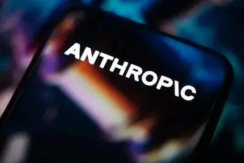
computesemicontaiwan
SEMICON Taiwan 2026：矽光子引領 AI 算力解方
傳統架構下，各環節分工明確，但在共同封裝光學與系統技術協同最佳化（System-Technology Co-O […]
- 科技新報 TechNews SEMICON Taiwan 2026：矽光子引領 AI 算力解方
windowssurfacemicrosoft
英伟达黄仁勋受邀出席，微软官宣 10 月 7 日举办 Windows 和 Surface 发布会
IT之家 9 月 16 日消息，微软宣布将于太平洋时间 10 月 7 日上午 10 点（北京时间 10 月 8 日凌晨 1 点）在美国旧金山举办发布会， 主题为本地人工智能如何塑造 PC 的下一阶段，预估展示 Windows 和 Surface 设备的未来规划。 在出席人员方面，除了微软首席执行官萨提亚 · 纳德拉（Satya Nadella）、Windows 和 Surface 负责人帕万 · 达武鲁里（Pavan Davuluri）之外，英伟达首席执行官黄仁勋也受邀参与本次活动。 在产品方面，基于黄仁勋也会出席本次活动，科技媒体 The Verge
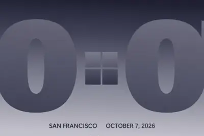
tpu100
谷歌 TPU AI 基建规模迈入 100 万级，核心瓶颈从“缺芯”转向“缺电”
IT之家 9 月 16 日消息，在 SEMICON Taiwan 2026 活动中，谷歌宣布其 TPU 系统已扩展至 100 万芯片级规模， 而电力供应成为 AI 基础设施扩张的核心瓶颈。 IT之家注：这里的“100 万芯片级规模”是指谷歌的 TPU 互联架构（包括网络拓扑、通信协议、软件栈等）已经能够支持将最多 100 万颗 TPU 芯片连接成一个统一的计算集群，实现协同工作。 该技术能力的突破，意味着超大规模 AI 模型训练可以跨越多个数据中心、多个 Pod 进行分布式训练， 而电力供应（而非芯片数量）已成为限制进一步扩张的核心瓶颈。 在题为“思维的
ask
工程師尋料不必再翻文件、追著業務問，3M 用 Agentic AI 重寫工作流程
3M 旗下擁有超過 6 萬種產品，但繁瑣的規格搜尋常成為銷售與研發的隱形阻礙。過去，工程師需要翻閱龐大的規格文件、技術資料，甚至與業務及技術顧問反覆溝通，才能確認產品是否符合需求。當尋找材料本身演變為耗時費力的負擔，企業極可能因無法即時取得資訊，轉而選擇資訊更易取得的競爭品牌。 為此，3M 推出 Agentic AI（代理式 AI）數位助手「Ask 3M」，首階段聚焦於工業膠帶與黏合劑，讓工程師與採購人員能以自然語言進行自主查詢，迅速評估並選購適用的材料。 對接內部技術檔案，打通「搜尋至採購」的決策閉環 Ask 3M 的回答並非依賴開放網路資訊，而是建立
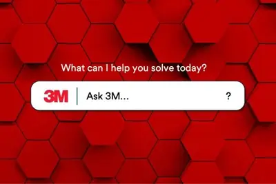
- TechOrange 科技報橘 工程師尋料不必再翻文件、追著業務問，3M 用 Agentic AI 重寫工作流程
handlewhatsappsetup
Meta now lets AI agents handle the boring parts of WhatsApp Business setup
A new WhatsApp Business MCP server lets developers use AI coding agents like Claude, Cursor, Codex, and ChatGPT to handle setup, messaging templates, testing, and troubleshooting.
robotagilityhumanoid
Agility’s new humanoid robot will stop, squat to avoid harming human coworkers
Robots can start working outside physical cages and without safety barriers.
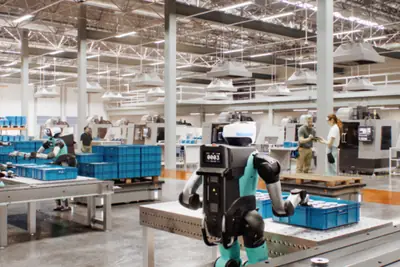
naturalgascenters
US data centers could consume more natural gas than Germany and Japan combined by 2035
The AI frenzy could push U.S. data centers to become one of the largest consumers of natural gas in the world.
actortillynorwood
AI ‘Actor’ Tilly Norwood Told Me That ‘All Lives Matter’
The virtual character, which is promoting its upcoming movie Misaligned, tries to evade politics by repetitively commenting on the clothes you’re wearing.
theyroundtablesreally
Roundtables: Could AI really kill us all?
Listen to the session or watch below Employees at the world’s leading AI labs are saying there’s a real possibility that advanced AI could destroy humanity. Are they right? Or is this more scaremongering and hype? Watch a conversation unpacking AI extinction fears: where they com
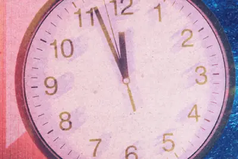
- MIT Technology Review AI Roundtables: Could AI really kill us all?
placesnitchagents
AI agents now have a place to snitch
The AI Contact Hotline is designed to be a discreet place where agents that have witnessed misbehavior can tip off authorities.
- TechCrunch AI AI agents now have a place to snitch
tokensfactoryinfra
From Megawatts to Tokens: How NVIDIA Maximizes AI Factory Production
On a sweltering August evening in Silicon Valley, as the sun dropped and air conditioning loads spiked, Silicon Valley Power sent a signal to an AI factory to adjust its power consumption. Varun Sivaram was watching on Zoom with about forty others — his team at Emerald AI in thei
acedtask.again
Your Agent Aced the Task. Will It Do It Again?

- Hugging Face Your Agent Aced the Task. Will It Do It Again?
societalimpactexplore
AI for Societal Impact
Explore this collection to see how experts and local leaders are using AI breakthroughs to ensure everyone can share the opportunity of AI.
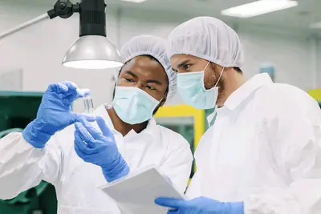
- Google AI AI for Societal Impact
buildingacceleratescience
Building AI to accelerate science and improve lives
B-roll showing diverse environments and people, including a teacher and students in a classroom and a patient with a doctor
seriesroundraised
AEO startup Profound hits unicorn valuation, raises $180M Series D 7 months after last round
Profound has raised a $180 million Series D at a $1.8 billion valuation, less than seven months after it raised a $96 million Series C.